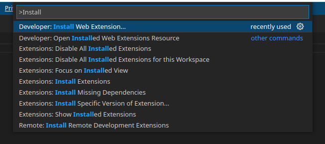

Hello LSP Web¶
importScripts("https://cdn.jsdelivr.net/pyodide/v0.18.1/full/pyodide.js")
async function initPyodide() {
console.log("Initing pyodide.")
/* @ts-ignore */
let pyodide = await loadPyodide({
indexURL: "https://cdn.jsdelivr.net/pyodide/v0.18.1/full/"
})
return pyodide
}
const pyodideReady = initPyodide()
onmessage = async (event) => {
console.log(`Client message:`, event.data)
if (event.data.method === "initialize") {
postMessage({
jsonrpc: "2.0",
id: event.data.id,
result: {
serverInfo: { name: "Hello, LSP" },
capabilities: {}
}
})
}
let pyodide = await pyodideReady
console.log(pyodide.runPython("import sys;sys.version"))
}
import { ExtensionContext, Uri } from "vscode";
import { LanguageClientOptions } from "vscode-languageclient";
// Be sure to use the browser version of the client!
import { LanguageClient } from "vscode-languageclient/browser";
export function activate(context: ExtensionContext) {
console.log("activating extension")
const clientOptions: LanguageClientOptions = {
documentSelector: [
{ scheme: "file", language: "plaintext" },
],
outputChannelName: "Hello Language Server",
}
const path = Uri.joinPath(context.extensionUri, "dist/server.js")
const worker = new Worker(path.toString())
const client = new LanguageClient("hello-lsp-web", "Hello LSP", clientOptions, worker)
context.subscriptions.push(client.start())
client.onReady().then(() => {
console.log("hello-lsp-web server is ready")
})
}
{
"name": "hello-lsp-web",
"version": "0.1.0",
"lockfileVersion": 1,
"requires": true,
"dependencies": {
"@discoveryjs/json-ext": {
"version": "0.5.5",
"resolved": "https://registry.npmjs.org/@discoveryjs/json-ext/-/json-ext-0.5.5.tgz",
"integrity": "sha512-6nFkfkmSeV/rqSaS4oWHgmpnYw194f6hmWF5is6b0J1naJZoiD0NTc9AiUwPHvWsowkjuHErCZT1wa0jg+BLIA==",
"dev": true
},
"@jridgewell/gen-mapping": {
"version": "0.3.2",
"resolved": "https://registry.npmjs.org/@jridgewell/gen-mapping/-/gen-mapping-0.3.2.tgz",
"integrity": "sha512-mh65xKQAzI6iBcFzwv28KVWSmCkdRBWoOh+bYQGW3+6OZvbbN3TqMGo5hqYxQniRcH9F2VZIoJCm4pa3BPDK/A==",
"dev": true,
"requires": {
"@jridgewell/set-array": "^1.0.1",
"@jridgewell/sourcemap-codec": "^1.4.10",
"@jridgewell/trace-mapping": "^0.3.9"
}
},
"@jridgewell/resolve-uri": {
"version": "3.1.0",
"resolved": "https://registry.npmjs.org/@jridgewell/resolve-uri/-/resolve-uri-3.1.0.tgz",
"integrity": "sha512-F2msla3tad+Mfht5cJq7LSXcdudKTWCVYUgw6pLFOOHSTtZlj6SWNYAp+AhuqLmWdBO2X5hPrLcu8cVP8fy28w==",
"dev": true
},
"@jridgewell/set-array": {
"version": "1.1.2",
"resolved": "https://registry.npmjs.org/@jridgewell/set-array/-/set-array-1.1.2.tgz",
"integrity": "sha512-xnkseuNADM0gt2bs+BvhO0p78Mk762YnZdsuzFV018NoG1Sj1SCQvpSqa7XUaTam5vAGasABV9qXASMKnFMwMw==",
"dev": true
},
"@jridgewell/source-map": {
"version": "0.3.2",
"resolved": "https://registry.npmjs.org/@jridgewell/source-map/-/source-map-0.3.2.tgz",
"integrity": "sha512-m7O9o2uR8k2ObDysZYzdfhb08VuEml5oWGiosa1VdaPZ/A6QyPkAJuwN0Q1lhULOf6B7MtQmHENS743hWtCrgw==",
"dev": true,
"requires": {
"@jridgewell/gen-mapping": "^0.3.0",
"@jridgewell/trace-mapping": "^0.3.9"
}
},
"@jridgewell/sourcemap-codec": {
"version": "1.4.14",
"resolved": "https://registry.npmjs.org/@jridgewell/sourcemap-codec/-/sourcemap-codec-1.4.14.tgz",
"integrity": "sha512-XPSJHWmi394fuUuzDnGz1wiKqWfo1yXecHQMRf2l6hztTO+nPru658AyDngaBe7isIxEkRsPR3FZh+s7iVa4Uw==",
"dev": true
},
"@jridgewell/trace-mapping": {
"version": "0.3.17",
"resolved": "https://registry.npmjs.org/@jridgewell/trace-mapping/-/trace-mapping-0.3.17.tgz",
"integrity": "sha512-MCNzAp77qzKca9+W/+I0+sEpaUnZoeasnghNeVc41VZCEKaCH73Vq3BZZ/SzWIgrqE4H4ceI+p+b6C0mHf9T4g==",
"dev": true,
"requires": {
"@jridgewell/resolve-uri": "3.1.0",
"@jridgewell/sourcemap-codec": "1.4.14"
}
},
"@types/eslint": {
"version": "8.21.2",
"resolved": "https://registry.npmjs.org/@types/eslint/-/eslint-8.21.2.tgz",
"integrity": "sha512-EMpxUyystd3uZVByZap1DACsMXvb82ypQnGn89e1Y0a+LYu3JJscUd/gqhRsVFDkaD2MIiWo0MT8EfXr3DGRKw==",
"dev": true,
"requires": {
"@types/estree": "*",
"@types/json-schema": "*"
}
},
"@types/eslint-scope": {
"version": "3.7.4",
"resolved": "https://registry.npmjs.org/@types/eslint-scope/-/eslint-scope-3.7.4.tgz",
"integrity": "sha512-9K4zoImiZc3HlIp6AVUDE4CWYx22a+lhSZMYNpbjW04+YF0KWj4pJXnEMjdnFTiQibFFmElcsasJXDbdI/EPhA==",
"dev": true,
"requires": {
"@types/eslint": "*",
"@types/estree": "*"
}
},
"@types/estree": {
"version": "0.0.51",
"resolved": "https://registry.npmjs.org/@types/estree/-/estree-0.0.51.tgz",
"integrity": "sha512-CuPgU6f3eT/XgKKPqKd/gLZV1Xmvf1a2R5POBOGQa6uv82xpls89HU5zKeVoyR8XzHd1RGNOlQlvUe3CFkjWNQ==",
"dev": true
},
"@types/json-schema": {
"version": "7.0.11",
"resolved": "https://registry.npmjs.org/@types/json-schema/-/json-schema-7.0.11.tgz",
"integrity": "sha512-wOuvG1SN4Us4rez+tylwwwCV1psiNVOkJeM3AUWUNWg/jDQY2+HE/444y5gc+jBmRqASOm2Oeh5c1axHobwRKQ==",
"dev": true
},
"@types/node": {
"version": "18.15.3",
"resolved": "https://registry.npmjs.org/@types/node/-/node-18.15.3.tgz",
"integrity": "sha512-p6ua9zBxz5otCmbpb5D3U4B5Nanw6Pk3PPyX05xnxbB/fRv71N7CPmORg7uAD5P70T0xmx1pzAx/FUfa5X+3cw==",
"dev": true
},
"@types/vscode": {
"version": "1.61.0",
"resolved": "https://registry.npmjs.org/@types/vscode/-/vscode-1.61.0.tgz",
"integrity": "sha512-9k5Nwq45hkRwdfCFY+eKXeQQSbPoA114mF7U/4uJXRBJeGIO7MuJdhF1PnaDN+lllL9iKGQtd6FFXShBXMNaFg==",
"dev": true
},
"@webassemblyjs/ast": {
"version": "1.11.1",
"resolved": "https://registry.npmjs.org/@webassemblyjs/ast/-/ast-1.11.1.tgz",
"integrity": "sha512-ukBh14qFLjxTQNTXocdyksN5QdM28S1CxHt2rdskFyL+xFV7VremuBLVbmCePj+URalXBENx/9Lm7lnhihtCSw==",
"dev": true,
"requires": {
"@webassemblyjs/helper-numbers": "1.11.1",
"@webassemblyjs/helper-wasm-bytecode": "1.11.1"
}
},
"@webassemblyjs/floating-point-hex-parser": {
"version": "1.11.1",
"resolved": "https://registry.npmjs.org/@webassemblyjs/floating-point-hex-parser/-/floating-point-hex-parser-1.11.1.tgz",
"integrity": "sha512-iGRfyc5Bq+NnNuX8b5hwBrRjzf0ocrJPI6GWFodBFzmFnyvrQ83SHKhmilCU/8Jv67i4GJZBMhEzltxzcNagtQ==",
"dev": true
},
"@webassemblyjs/helper-api-error": {
"version": "1.11.1",
"resolved": "https://registry.npmjs.org/@webassemblyjs/helper-api-error/-/helper-api-error-1.11.1.tgz",
"integrity": "sha512-RlhS8CBCXfRUR/cwo2ho9bkheSXG0+NwooXcc3PAILALf2QLdFyj7KGsKRbVc95hZnhnERon4kW/D3SZpp6Tcg==",
"dev": true
},
"@webassemblyjs/helper-buffer": {
"version": "1.11.1",
"resolved": "https://registry.npmjs.org/@webassemblyjs/helper-buffer/-/helper-buffer-1.11.1.tgz",
"integrity": "sha512-gwikF65aDNeeXa8JxXa2BAk+REjSyhrNC9ZwdT0f8jc4dQQeDQ7G4m0f2QCLPJiMTTO6wfDmRmj/pW0PsUvIcA==",
"dev": true
},
"@webassemblyjs/helper-numbers": {
"version": "1.11.1",
"resolved": "https://registry.npmjs.org/@webassemblyjs/helper-numbers/-/helper-numbers-1.11.1.tgz",
"integrity": "sha512-vDkbxiB8zfnPdNK9Rajcey5C0w+QJugEglN0of+kmO8l7lDb77AnlKYQF7aarZuCrv+l0UvqL+68gSDr3k9LPQ==",
"dev": true,
"requires": {
"@webassemblyjs/floating-point-hex-parser": "1.11.1",
"@webassemblyjs/helper-api-error": "1.11.1",
"@xtuc/long": "4.2.2"
}
},
"@webassemblyjs/helper-wasm-bytecode": {
"version": "1.11.1",
"resolved": "https://registry.npmjs.org/@webassemblyjs/helper-wasm-bytecode/-/helper-wasm-bytecode-1.11.1.tgz",
"integrity": "sha512-PvpoOGiJwXeTrSf/qfudJhwlvDQxFgelbMqtq52WWiXC6Xgg1IREdngmPN3bs4RoO83PnL/nFrxucXj1+BX62Q==",
"dev": true
},
"@webassemblyjs/helper-wasm-section": {
"version": "1.11.1",
"resolved": "https://registry.npmjs.org/@webassemblyjs/helper-wasm-section/-/helper-wasm-section-1.11.1.tgz",
"integrity": "sha512-10P9No29rYX1j7F3EVPX3JvGPQPae+AomuSTPiF9eBQeChHI6iqjMIwR9JmOJXwpnn/oVGDk7I5IlskuMwU/pg==",
"dev": true,
"requires": {
"@webassemblyjs/ast": "1.11.1",
"@webassemblyjs/helper-buffer": "1.11.1",
"@webassemblyjs/helper-wasm-bytecode": "1.11.1",
"@webassemblyjs/wasm-gen": "1.11.1"
}
},
"@webassemblyjs/ieee754": {
"version": "1.11.1",
"resolved": "https://registry.npmjs.org/@webassemblyjs/ieee754/-/ieee754-1.11.1.tgz",
"integrity": "sha512-hJ87QIPtAMKbFq6CGTkZYJivEwZDbQUgYd3qKSadTNOhVY7p+gfP6Sr0lLRVTaG1JjFj+r3YchoqRYxNH3M0GQ==",
"dev": true,
"requires": {
"@xtuc/ieee754": "^1.2.0"
}
},
"@webassemblyjs/leb128": {
"version": "1.11.1",
"resolved": "https://registry.npmjs.org/@webassemblyjs/leb128/-/leb128-1.11.1.tgz",
"integrity": "sha512-BJ2P0hNZ0u+Th1YZXJpzW6miwqQUGcIHT1G/sf72gLVD9DZ5AdYTqPNbHZh6K1M5VmKvFXwGSWZADz+qBWxeRw==",
"dev": true,
"requires": {
"@xtuc/long": "4.2.2"
}
},
"@webassemblyjs/utf8": {
"version": "1.11.1",
"resolved": "https://registry.npmjs.org/@webassemblyjs/utf8/-/utf8-1.11.1.tgz",
"integrity": "sha512-9kqcxAEdMhiwQkHpkNiorZzqpGrodQQ2IGrHHxCy+Ozng0ofyMA0lTqiLkVs1uzTRejX+/O0EOT7KxqVPuXosQ==",
"dev": true
},
"@webassemblyjs/wasm-edit": {
"version": "1.11.1",
"resolved": "https://registry.npmjs.org/@webassemblyjs/wasm-edit/-/wasm-edit-1.11.1.tgz",
"integrity": "sha512-g+RsupUC1aTHfR8CDgnsVRVZFJqdkFHpsHMfJuWQzWU3tvnLC07UqHICfP+4XyL2tnr1amvl1Sdp06TnYCmVkA==",
"dev": true,
"requires": {
"@webassemblyjs/ast": "1.11.1",
"@webassemblyjs/helper-buffer": "1.11.1",
"@webassemblyjs/helper-wasm-bytecode": "1.11.1",
"@webassemblyjs/helper-wasm-section": "1.11.1",
"@webassemblyjs/wasm-gen": "1.11.1",
"@webassemblyjs/wasm-opt": "1.11.1",
"@webassemblyjs/wasm-parser": "1.11.1",
"@webassemblyjs/wast-printer": "1.11.1"
}
},
"@webassemblyjs/wasm-gen": {
"version": "1.11.1",
"resolved": "https://registry.npmjs.org/@webassemblyjs/wasm-gen/-/wasm-gen-1.11.1.tgz",
"integrity": "sha512-F7QqKXwwNlMmsulj6+O7r4mmtAlCWfO/0HdgOxSklZfQcDu0TpLiD1mRt/zF25Bk59FIjEuGAIyn5ei4yMfLhA==",
"dev": true,
"requires": {
"@webassemblyjs/ast": "1.11.1",
"@webassemblyjs/helper-wasm-bytecode": "1.11.1",
"@webassemblyjs/ieee754": "1.11.1",
"@webassemblyjs/leb128": "1.11.1",
"@webassemblyjs/utf8": "1.11.1"
}
},
"@webassemblyjs/wasm-opt": {
"version": "1.11.1",
"resolved": "https://registry.npmjs.org/@webassemblyjs/wasm-opt/-/wasm-opt-1.11.1.tgz",
"integrity": "sha512-VqnkNqnZlU5EB64pp1l7hdm3hmQw7Vgqa0KF/KCNO9sIpI6Fk6brDEiX+iCOYrvMuBWDws0NkTOxYEb85XQHHw==",
"dev": true,
"requires": {
"@webassemblyjs/ast": "1.11.1",
"@webassemblyjs/helper-buffer": "1.11.1",
"@webassemblyjs/wasm-gen": "1.11.1",
"@webassemblyjs/wasm-parser": "1.11.1"
}
},
"@webassemblyjs/wasm-parser": {
"version": "1.11.1",
"resolved": "https://registry.npmjs.org/@webassemblyjs/wasm-parser/-/wasm-parser-1.11.1.tgz",
"integrity": "sha512-rrBujw+dJu32gYB7/Lup6UhdkPx9S9SnobZzRVL7VcBH9Bt9bCBLEuX/YXOOtBsOZ4NQrRykKhffRWHvigQvOA==",
"dev": true,
"requires": {
"@webassemblyjs/ast": "1.11.1",
"@webassemblyjs/helper-api-error": "1.11.1",
"@webassemblyjs/helper-wasm-bytecode": "1.11.1",
"@webassemblyjs/ieee754": "1.11.1",
"@webassemblyjs/leb128": "1.11.1",
"@webassemblyjs/utf8": "1.11.1"
}
},
"@webassemblyjs/wast-printer": {
"version": "1.11.1",
"resolved": "https://registry.npmjs.org/@webassemblyjs/wast-printer/-/wast-printer-1.11.1.tgz",
"integrity": "sha512-IQboUWM4eKzWW+N/jij2sRatKMh99QEelo3Eb2q0qXkvPRISAj8Qxtmw5itwqK+TTkBuUIE45AxYPToqPtL5gg==",
"dev": true,
"requires": {
"@webassemblyjs/ast": "1.11.1",
"@xtuc/long": "4.2.2"
}
},
"@webpack-cli/configtest": {
"version": "1.1.0",
"resolved": "https://registry.npmjs.org/@webpack-cli/configtest/-/configtest-1.1.0.tgz",
"integrity": "sha512-ttOkEkoalEHa7RaFYpM0ErK1xc4twg3Am9hfHhL7MVqlHebnkYd2wuI/ZqTDj0cVzZho6PdinY0phFZV3O0Mzg==",
"dev": true
},
"@webpack-cli/info": {
"version": "1.4.0",
"resolved": "https://registry.npmjs.org/@webpack-cli/info/-/info-1.4.0.tgz",
"integrity": "sha512-F6b+Man0rwE4n0409FyAJHStYA5OIZERxmnUfLVwv0mc0V1wLad3V7jqRlMkgKBeAq07jUvglacNaa6g9lOpuw==",
"dev": true,
"requires": {
"envinfo": "^7.7.3"
}
},
"@webpack-cli/serve": {
"version": "1.6.0",
"resolved": "https://registry.npmjs.org/@webpack-cli/serve/-/serve-1.6.0.tgz",
"integrity": "sha512-ZkVeqEmRpBV2GHvjjUZqEai2PpUbuq8Bqd//vEYsp63J8WyexI8ppCqVS3Zs0QADf6aWuPdU+0XsPI647PVlQA==",
"dev": true
},
"@xtuc/ieee754": {
"version": "1.2.0",
"resolved": "https://registry.npmjs.org/@xtuc/ieee754/-/ieee754-1.2.0.tgz",
"integrity": "sha512-DX8nKgqcGwsc0eJSqYt5lwP4DH5FlHnmuWWBRy7X0NcaGR0ZtuyeESgMwTYVEtxmsNGY+qit4QYT/MIYTOTPeA==",
"dev": true
},
"@xtuc/long": {
"version": "4.2.2",
"resolved": "https://registry.npmjs.org/@xtuc/long/-/long-4.2.2.tgz",
"integrity": "sha512-NuHqBY1PB/D8xU6s/thBgOAiAP7HOYDQ32+BFZILJ8ivkUkAHQnWfn6WhL79Owj1qmUnoN/YPhktdIoucipkAQ==",
"dev": true
},
"acorn": {
"version": "8.8.2",
"resolved": "https://registry.npmjs.org/acorn/-/acorn-8.8.2.tgz",
"integrity": "sha512-xjIYgE8HBrkpd/sJqOGNspf8uHG+NOHGOw6a/Urj8taM2EXfdNAH2oFcPeIFfsv3+kz/mJrS5VuMqbNLjCa2vw==",
"dev": true
},
"acorn-import-assertions": {
"version": "1.8.0",
"resolved": "https://registry.npmjs.org/acorn-import-assertions/-/acorn-import-assertions-1.8.0.tgz",
"integrity": "sha512-m7VZ3jwz4eK6A4Vtt8Ew1/mNbP24u0FhdyfA7fSvnJR6LMdfOYnmuIrrJAgrYfYJ10F/otaHTtrtrtmHdMNzEw==",
"dev": true
},
"ajv": {
"version": "6.12.6",
"resolved": "https://registry.npmjs.org/ajv/-/ajv-6.12.6.tgz",
"integrity": "sha512-j3fVLgvTo527anyYyJOGTYJbG+vnnQYvE0m5mmkc1TK+nxAppkCLMIL0aZ4dblVCNoGShhm+kzE4ZUykBoMg4g==",
"dev": true,
"requires": {
"fast-deep-equal": "^3.1.1",
"fast-json-stable-stringify": "^2.0.0",
"json-schema-traverse": "^0.4.1",
"uri-js": "^4.2.2"
}
},
"ajv-keywords": {
"version": "3.5.2",
"resolved": "https://registry.npmjs.org/ajv-keywords/-/ajv-keywords-3.5.2.tgz",
"integrity": "sha512-5p6WTN0DdTGVQk6VjcEju19IgaHudalcfabD7yhDGeA6bcQnmL+CpveLJq/3hvfwd1aof6L386Ougkx6RfyMIQ==",
"dev": true
},
"ansi-styles": {
"version": "4.3.0",
"resolved": "https://registry.npmjs.org/ansi-styles/-/ansi-styles-4.3.0.tgz",
"integrity": "sha512-zbB9rCJAT1rbjiVDb2hqKFHNYLxgtk8NURxZ3IZwD3F6NtxbXZQCnnSi1Lkx+IDohdPlFp222wVALIheZJQSEg==",
"dev": true,
"requires": {
"color-convert": "^2.0.1"
}
},
"balanced-match": {
"version": "1.0.2",
"resolved": "https://registry.npmjs.org/balanced-match/-/balanced-match-1.0.2.tgz",
"integrity": "sha512-3oSeUO0TMV67hN1AmbXsK4yaqU7tjiHlbxRDZOpH0KW9+CeX4bRAaX0Anxt0tx2MrpRpWwQaPwIlISEJhYU5Pw=="
},
"brace-expansion": {
"version": "1.1.11",
"resolved": "https://registry.npmjs.org/brace-expansion/-/brace-expansion-1.1.11.tgz",
"integrity": "sha512-iCuPHDFgrHX7H2vEI/5xpz07zSHB00TpugqhmYtVmMO6518mCuRMoOYFldEBl0g187ufozdaHgWKcYFb61qGiA==",
"requires": {
"balanced-match": "^1.0.0",
"concat-map": "0.0.1"
}
},
"braces": {
"version": "3.0.2",
"resolved": "https://registry.npmjs.org/braces/-/braces-3.0.2.tgz",
"integrity": "sha512-b8um+L1RzM3WDSzvhm6gIz1yfTbBt6YTlcEKAvsmqCZZFw46z626lVj9j1yEPW33H5H+lBQpZMP1k8l+78Ha0A==",
"dev": true,
"requires": {
"fill-range": "^7.0.1"
}
},
"browserslist": {
"version": "4.21.5",
"resolved": "https://registry.npmjs.org/browserslist/-/browserslist-4.21.5.tgz",
"integrity": "sha512-tUkiguQGW7S3IhB7N+c2MV/HZPSCPAAiYBZXLsBhFB/PCy6ZKKsZrmBayHV9fdGV/ARIfJ14NkxKzRDjvp7L6w==",
"dev": true,
"requires": {
"caniuse-lite": "^1.0.30001449",
"electron-to-chromium": "^1.4.284",
"node-releases": "^2.0.8",
"update-browserslist-db": "^1.0.10"
}
},
"buffer-from": {
"version": "1.1.2",
"resolved": "https://registry.npmjs.org/buffer-from/-/buffer-from-1.1.2.tgz",
"integrity": "sha512-E+XQCRwSbaaiChtv6k6Dwgc+bx+Bs6vuKJHHl5kox/BaKbhiXzqQOwK4cO22yElGp2OCmjwVhT3HmxgyPGnJfQ==",
"dev": true
},
"caniuse-lite": {
"version": "1.0.30001466",
"resolved": "https://registry.npmjs.org/caniuse-lite/-/caniuse-lite-1.0.30001466.tgz",
"integrity": "sha512-ewtFBSfWjEmxUgNBSZItFSmVtvk9zkwkl1OfRZlKA8slltRN+/C/tuGVrF9styXkN36Yu3+SeJ1qkXxDEyNZ5w==",
"dev": true
},
"chalk": {
"version": "4.1.2",
"resolved": "https://registry.npmjs.org/chalk/-/chalk-4.1.2.tgz",
"integrity": "sha512-oKnbhFyRIXpUuez8iBMmyEa4nbj4IOQyuhc/wy9kY7/WVPcwIO9VA668Pu8RkO7+0G76SLROeyw9CpQ061i4mA==",
"dev": true,
"requires": {
"ansi-styles": "^4.1.0",
"supports-color": "^7.1.0"
}
},
"chrome-trace-event": {
"version": "1.0.3",
"resolved": "https://registry.npmjs.org/chrome-trace-event/-/chrome-trace-event-1.0.3.tgz",
"integrity": "sha512-p3KULyQg4S7NIHixdwbGX+nFHkoBiA4YQmyWtjb8XngSKV124nJmRysgAeujbUVb15vh+RvFUfCPqU7rXk+hZg==",
"dev": true
},
"clone-deep": {
"version": "4.0.1",
"resolved": "https://registry.npmjs.org/clone-deep/-/clone-deep-4.0.1.tgz",
"integrity": "sha512-neHB9xuzh/wk0dIHweyAXv2aPGZIVk3pLMe+/RNzINf17fe0OG96QroktYAUm7SM1PBnzTabaLboqqxDyMU+SQ==",
"dev": true,
"requires": {
"is-plain-object": "^2.0.4",
"kind-of": "^6.0.2",
"shallow-clone": "^3.0.0"
}
},
"color-convert": {
"version": "2.0.1",
"resolved": "https://registry.npmjs.org/color-convert/-/color-convert-2.0.1.tgz",
"integrity": "sha512-RRECPsj7iu/xb5oKYcsFHSppFNnsj/52OVTRKb4zP5onXwVF3zVmmToNcOfGC+CRDpfK/U584fMg38ZHCaElKQ==",
"dev": true,
"requires": {
"color-name": "~1.1.4"
}
},
"color-name": {
"version": "1.1.4",
"resolved": "https://registry.npmjs.org/color-name/-/color-name-1.1.4.tgz",
"integrity": "sha512-dOy+3AuW3a2wNbZHIuMZpTcgjGuLU/uBL/ubcZF9OXbDo8ff4O8yVp5Bf0efS8uEoYo5q4Fx7dY9OgQGXgAsQA==",
"dev": true
},
"colorette": {
"version": "2.0.16",
"resolved": "https://registry.npmjs.org/colorette/-/colorette-2.0.16.tgz",
"integrity": "sha512-hUewv7oMjCp+wkBv5Rm0v87eJhq4woh5rSR+42YSQJKecCqgIqNkZ6lAlQms/BwHPJA5NKMRlpxPRv0n8HQW6g==",
"dev": true
},
"commander": {
"version": "2.20.3",
"resolved": "https://registry.npmjs.org/commander/-/commander-2.20.3.tgz",
"integrity": "sha512-GpVkmM8vF2vQUkj2LvZmD35JxeJOLCwJ9cUkugyk2nuhbv3+mJvpLYYt+0+USMxE+oj+ey/lJEnhZw75x/OMcQ==",
"dev": true
},
"concat-map": {
"version": "0.0.1",
"resolved": "https://registry.npmjs.org/concat-map/-/concat-map-0.0.1.tgz",
"integrity": "sha1-2Klr13/Wjfd5OnMDajug1UBdR3s="
},
"cross-spawn": {
"version": "7.0.3",
"resolved": "https://registry.npmjs.org/cross-spawn/-/cross-spawn-7.0.3.tgz",
"integrity": "sha512-iRDPJKUPVEND7dHPO8rkbOnPpyDygcDFtWjpeWNCgy8WP2rXcxXL8TskReQl6OrB2G7+UJrags1q15Fudc7G6w==",
"dev": true,
"requires": {
"path-key": "^3.1.0",
"shebang-command": "^2.0.0",
"which": "^2.0.1"
}
},
"electron-to-chromium": {
"version": "1.4.328",
"resolved": "https://registry.npmjs.org/electron-to-chromium/-/electron-to-chromium-1.4.328.tgz",
"integrity": "sha512-DE9tTy2PNmy1v55AZAO542ui+MLC2cvINMK4P2LXGsJdput/ThVG9t+QGecPuAZZSgC8XoI+Jh9M1OG9IoNSCw==",
"dev": true
},
"enhanced-resolve": {
"version": "5.8.3",
"resolved": "https://registry.npmjs.org/enhanced-resolve/-/enhanced-resolve-5.8.3.tgz",
"integrity": "sha512-EGAbGvH7j7Xt2nc0E7D99La1OiEs8LnyimkRgwExpUMScN6O+3x9tIWs7PLQZVNx4YD+00skHXPXi1yQHpAmZA==",
"dev": true,
"requires": {
"graceful-fs": "^4.2.4",
"tapable": "^2.2.0"
}
},
"envinfo": {
"version": "7.8.1",
"resolved": "https://registry.npmjs.org/envinfo/-/envinfo-7.8.1.tgz",
"integrity": "sha512-/o+BXHmB7ocbHEAs6F2EnG0ogybVVUdkRunTT2glZU9XAaGmhqskrvKwqXuDfNjEO0LZKWdejEEpnq8aM0tOaw==",
"dev": true
},
"es-module-lexer": {
"version": "0.9.3",
"resolved": "https://registry.npmjs.org/es-module-lexer/-/es-module-lexer-0.9.3.tgz",
"integrity": "sha512-1HQ2M2sPtxwnvOvT1ZClHyQDiggdNjURWpY2we6aMKCQiUVxTmVs2UYPLIrD84sS+kMdUwfBSylbJPwNnBrnHQ==",
"dev": true
},
"escalade": {
"version": "3.1.1",
"resolved": "https://registry.npmjs.org/escalade/-/escalade-3.1.1.tgz",
"integrity": "sha512-k0er2gUkLf8O0zKJiAhmkTnJlTvINGv7ygDNPbeIsX/TJjGJZHuh9B2UxbsaEkmlEo9MfhrSzmhIlhRlI2GXnw==",
"dev": true
},
"eslint-scope": {
"version": "5.1.1",
"resolved": "https://registry.npmjs.org/eslint-scope/-/eslint-scope-5.1.1.tgz",
"integrity": "sha512-2NxwbF/hZ0KpepYN0cNbo+FN6XoK7GaHlQhgx/hIZl6Va0bF45RQOOwhLIy8lQDbuCiadSLCBnH2CFYquit5bw==",
"dev": true,
"requires": {
"esrecurse": "^4.3.0",
"estraverse": "^4.1.1"
}
},
"esrecurse": {
"version": "4.3.0",
"resolved": "https://registry.npmjs.org/esrecurse/-/esrecurse-4.3.0.tgz",
"integrity": "sha512-KmfKL3b6G+RXvP8N1vr3Tq1kL/oCFgn2NYXEtqP8/L3pKapUA4G8cFVaoF3SU323CD4XypR/ffioHmkti6/Tag==",
"dev": true,
"requires": {
"estraverse": "^5.2.0"
},
"dependencies": {
"estraverse": {
"version": "5.3.0",
"resolved": "https://registry.npmjs.org/estraverse/-/estraverse-5.3.0.tgz",
"integrity": "sha512-MMdARuVEQziNTeJD8DgMqmhwR11BRQ/cBP+pLtYdSTnf3MIO8fFeiINEbX36ZdNlfU/7A9f3gUw49B3oQsvwBA==",
"dev": true
}
}
},
"estraverse": {
"version": "4.3.0",
"resolved": "https://registry.npmjs.org/estraverse/-/estraverse-4.3.0.tgz",
"integrity": "sha512-39nnKffWz8xN1BU/2c79n9nB9HDzo0niYUqx6xyqUnyoAnQyyWpOTdZEeiCch8BBu515t4wp9ZmgVfVhn9EBpw==",
"dev": true
},
"events": {
"version": "3.3.0",
"resolved": "https://registry.npmjs.org/events/-/events-3.3.0.tgz",
"integrity": "sha512-mQw+2fkQbALzQ7V0MY0IqdnXNOeTtP4r0lN9z7AAawCXgqea7bDii20AYrIBrFd/Hx0M2Ocz6S111CaFkUcb0Q==",
"dev": true
},
"execa": {
"version": "5.1.1",
"resolved": "https://registry.npmjs.org/execa/-/execa-5.1.1.tgz",
"integrity": "sha512-8uSpZZocAZRBAPIEINJj3Lo9HyGitllczc27Eh5YYojjMFMn8yHMDMaUHE2Jqfq05D/wucwI4JGURyXt1vchyg==",
"dev": true,
"requires": {
"cross-spawn": "^7.0.3",
"get-stream": "^6.0.0",
"human-signals": "^2.1.0",
"is-stream": "^2.0.0",
"merge-stream": "^2.0.0",
"npm-run-path": "^4.0.1",
"onetime": "^5.1.2",
"signal-exit": "^3.0.3",
"strip-final-newline": "^2.0.0"
}
},
"fast-deep-equal": {
"version": "3.1.3",
"resolved": "https://registry.npmjs.org/fast-deep-equal/-/fast-deep-equal-3.1.3.tgz",
"integrity": "sha512-f3qQ9oQy9j2AhBe/H9VC91wLmKBCCU/gDOnKNAYG5hswO7BLKj09Hc5HYNz9cGI++xlpDCIgDaitVs03ATR84Q==",
"dev": true
},
"fast-json-stable-stringify": {
"version": "2.1.0",
"resolved": "https://registry.npmjs.org/fast-json-stable-stringify/-/fast-json-stable-stringify-2.1.0.tgz",
"integrity": "sha512-lhd/wF+Lk98HZoTCtlVraHtfh5XYijIjalXck7saUtuanSDyLMxnHhSXEDJqHxD7msR8D0uCmqlkwjCV8xvwHw==",
"dev": true
},
"fastest-levenshtein": {
"version": "1.0.12",
"resolved": "https://registry.npmjs.org/fastest-levenshtein/-/fastest-levenshtein-1.0.12.tgz",
"integrity": "sha512-On2N+BpYJ15xIC974QNVuYGMOlEVt4s0EOI3wwMqOmK1fdDY+FN/zltPV8vosq4ad4c/gJ1KHScUn/6AWIgiow==",
"dev": true
},
"fill-range": {
"version": "7.0.1",
"resolved": "https://registry.npmjs.org/fill-range/-/fill-range-7.0.1.tgz",
"integrity": "sha512-qOo9F+dMUmC2Lcb4BbVvnKJxTPjCm+RRpe4gDuGrzkL7mEVl/djYSu2OdQ2Pa302N4oqkSg9ir6jaLWJ2USVpQ==",
"dev": true,
"requires": {
"to-regex-range": "^5.0.1"
}
},
"find-up": {
"version": "4.1.0",
"resolved": "https://registry.npmjs.org/find-up/-/find-up-4.1.0.tgz",
"integrity": "sha512-PpOwAdQ/YlXQ2vj8a3h8IipDuYRi3wceVQQGYWxNINccq40Anw7BlsEXCMbt1Zt+OLA6Fq9suIpIWD0OsnISlw==",
"dev": true,
"requires": {
"locate-path": "^5.0.0",
"path-exists": "^4.0.0"
}
},
"function-bind": {
"version": "1.1.1",
"resolved": "https://registry.npmjs.org/function-bind/-/function-bind-1.1.1.tgz",
"integrity": "sha512-yIovAzMX49sF8Yl58fSCWJ5svSLuaibPxXQJFLmBObTuCr0Mf1KiPopGM9NiFjiYBCbfaa2Fh6breQ6ANVTI0A==",
"dev": true
},
"get-stream": {
"version": "6.0.1",
"resolved": "https://registry.npmjs.org/get-stream/-/get-stream-6.0.1.tgz",
"integrity": "sha512-ts6Wi+2j3jQjqi70w5AlN8DFnkSwC+MqmxEzdEALB2qXZYV3X/b1CTfgPLGJNMeAWxdPfU8FO1ms3NUfaHCPYg==",
"dev": true
},
"glob-to-regexp": {
"version": "0.4.1",
"resolved": "https://registry.npmjs.org/glob-to-regexp/-/glob-to-regexp-0.4.1.tgz",
"integrity": "sha512-lkX1HJXwyMcprw/5YUZc2s7DrpAiHB21/V+E1rHUrVNokkvB6bqMzT0VfV6/86ZNabt1k14YOIaT7nDvOX3Iiw==",
"dev": true
},
"graceful-fs": {
"version": "4.2.8",
"resolved": "https://registry.npmjs.org/graceful-fs/-/graceful-fs-4.2.8.tgz",
"integrity": "sha512-qkIilPUYcNhJpd33n0GBXTB1MMPp14TxEsEs0pTrsSVucApsYzW5V+Q8Qxhik6KU3evy+qkAAowTByymK0avdg==",
"dev": true
},
"has": {
"version": "1.0.3",
"resolved": "https://registry.npmjs.org/has/-/has-1.0.3.tgz",
"integrity": "sha512-f2dvO0VU6Oej7RkWJGrehjbzMAjFp5/VKPp5tTpWIV4JHHZK1/BxbFRtf/siA2SWTe09caDmVtYYzWEIbBS4zw==",
"dev": true,
"requires": {
"function-bind": "^1.1.1"
}
},
"has-flag": {
"version": "4.0.0",
"resolved": "https://registry.npmjs.org/has-flag/-/has-flag-4.0.0.tgz",
"integrity": "sha512-EykJT/Q1KjTWctppgIAgfSO0tKVuZUjhgMr17kqTumMl6Afv3EISleU7qZUzoXDFTAHTDC4NOoG/ZxU3EvlMPQ==",
"dev": true
},
"human-signals": {
"version": "2.1.0",
"resolved": "https://registry.npmjs.org/human-signals/-/human-signals-2.1.0.tgz",
"integrity": "sha512-B4FFZ6q/T2jhhksgkbEW3HBvWIfDW85snkQgawt07S7J5QXTk6BkNV+0yAeZrM5QpMAdYlocGoljn0sJ/WQkFw==",
"dev": true
},
"import-local": {
"version": "3.0.3",
"resolved": "https://registry.npmjs.org/import-local/-/import-local-3.0.3.tgz",
"integrity": "sha512-bE9iaUY3CXH8Cwfan/abDKAxe1KGT9kyGsBPqf6DMK/z0a2OzAsrukeYNgIH6cH5Xr452jb1TUL8rSfCLjZ9uA==",
"dev": true,
"requires": {
"pkg-dir": "^4.2.0",
"resolve-cwd": "^3.0.0"
}
},
"interpret": {
"version": "2.2.0",
"resolved": "https://registry.npmjs.org/interpret/-/interpret-2.2.0.tgz",
"integrity": "sha512-Ju0Bz/cEia55xDwUWEa8+olFpCiQoypjnQySseKtmjNrnps3P+xfpUmGr90T7yjlVJmOtybRvPXhKMbHr+fWnw==",
"dev": true
},
"is-core-module": {
"version": "2.8.0",
"resolved": "https://registry.npmjs.org/is-core-module/-/is-core-module-2.8.0.tgz",
"integrity": "sha512-vd15qHsaqrRL7dtH6QNuy0ndJmRDrS9HAM1CAiSifNUFv4x1a0CCVsj18hJ1mShxIG6T2i1sO78MkP56r0nYRw==",
"dev": true,
"requires": {
"has": "^1.0.3"
}
},
"is-number": {
"version": "7.0.0",
"resolved": "https://registry.npmjs.org/is-number/-/is-number-7.0.0.tgz",
"integrity": "sha512-41Cifkg6e8TylSpdtTpeLVMqvSBEVzTttHvERD741+pnZ8ANv0004MRL43QKPDlK9cGvNp6NZWZUBlbGXYxxng==",
"dev": true
},
"is-plain-object": {
"version": "2.0.4",
"resolved": "https://registry.npmjs.org/is-plain-object/-/is-plain-object-2.0.4.tgz",
"integrity": "sha512-h5PpgXkWitc38BBMYawTYMWJHFZJVnBquFE57xFpjB8pJFiF6gZ+bU+WyI/yqXiFR5mdLsgYNaPe8uao6Uv9Og==",
"dev": true,
"requires": {
"isobject": "^3.0.1"
}
},
"is-stream": {
"version": "2.0.1",
"resolved": "https://registry.npmjs.org/is-stream/-/is-stream-2.0.1.tgz",
"integrity": "sha512-hFoiJiTl63nn+kstHGBtewWSKnQLpyb155KHheA1l39uvtO9nWIop1p3udqPcUd/xbF1VLMO4n7OI6p7RbngDg==",
"dev": true
},
"isexe": {
"version": "2.0.0",
"resolved": "https://registry.npmjs.org/isexe/-/isexe-2.0.0.tgz",
"integrity": "sha1-6PvzdNxVb/iUehDcsFctYz8s+hA=",
"dev": true
},
"isobject": {
"version": "3.0.1",
"resolved": "https://registry.npmjs.org/isobject/-/isobject-3.0.1.tgz",
"integrity": "sha1-TkMekrEalzFjaqH5yNHMvP2reN8=",
"dev": true
},
"jest-worker": {
"version": "27.5.1",
"resolved": "https://registry.npmjs.org/jest-worker/-/jest-worker-27.5.1.tgz",
"integrity": "sha512-7vuh85V5cdDofPyxn58nrPjBktZo0u9x1g8WtjQol+jZDaE+fhN+cIvTj11GndBnMnyfrUOG1sZQxCdjKh+DKg==",
"dev": true,
"requires": {
"@types/node": "*",
"merge-stream": "^2.0.0",
"supports-color": "^8.0.0"
},
"dependencies": {
"supports-color": {
"version": "8.1.1",
"resolved": "https://registry.npmjs.org/supports-color/-/supports-color-8.1.1.tgz",
"integrity": "sha512-MpUEN2OodtUzxvKQl72cUF7RQ5EiHsGvSsVG0ia9c5RbWGL2CI4C7EpPS8UTBIplnlzZiNuV56w+FuNxy3ty2Q==",
"dev": true,
"requires": {
"has-flag": "^4.0.0"
}
}
}
},
"json-parse-even-better-errors": {
"version": "2.3.1",
"resolved": "https://registry.npmjs.org/json-parse-even-better-errors/-/json-parse-even-better-errors-2.3.1.tgz",
"integrity": "sha512-xyFwyhro/JEof6Ghe2iz2NcXoj2sloNsWr/XsERDK/oiPCfaNhl5ONfp+jQdAZRQQ0IJWNzH9zIZF7li91kh2w==",
"dev": true
},
"json-schema-traverse": {
"version": "0.4.1",
"resolved": "https://registry.npmjs.org/json-schema-traverse/-/json-schema-traverse-0.4.1.tgz",
"integrity": "sha512-xbbCH5dCYU5T8LcEhhuh7HJ88HXuW3qsI3Y0zOZFKfZEHcpWiHU/Jxzk629Brsab/mMiHQti9wMP+845RPe3Vg==",
"dev": true
},
"kind-of": {
"version": "6.0.3",
"resolved": "https://registry.npmjs.org/kind-of/-/kind-of-6.0.3.tgz",
"integrity": "sha512-dcS1ul+9tmeD95T+x28/ehLgd9mENa3LsvDTtzm3vyBEO7RPptvAD+t44WVXaUjTBRcrpFeFlC8WCruUR456hw==",
"dev": true
},
"loader-runner": {
"version": "4.3.0",
"resolved": "https://registry.npmjs.org/loader-runner/-/loader-runner-4.3.0.tgz",
"integrity": "sha512-3R/1M+yS3j5ou80Me59j7F9IMs4PXs3VqRrm0TU3AbKPxlmpoY1TNscJV/oGJXo8qCatFGTfDbY6W6ipGOYXfg==",
"dev": true
},
"locate-path": {
"version": "5.0.0",
"resolved": "https://registry.npmjs.org/locate-path/-/locate-path-5.0.0.tgz",
"integrity": "sha512-t7hw9pI+WvuwNJXwk5zVHpyhIqzg2qTlklJOf0mVxGSbe3Fp2VieZcduNYjaLDoy6p9uGpQEGWG87WpMKlNq8g==",
"dev": true,
"requires": {
"p-locate": "^4.1.0"
}
},
"lru-cache": {
"version": "6.0.0",
"resolved": "https://registry.npmjs.org/lru-cache/-/lru-cache-6.0.0.tgz",
"integrity": "sha512-Jo6dJ04CmSjuznwJSS3pUeWmd/H0ffTlkXXgwZi+eq1UCmqQwCh+eLsYOYCwY991i2Fah4h1BEMCx4qThGbsiA==",
"requires": {
"yallist": "^4.0.0"
}
},
"merge-stream": {
"version": "2.0.0",
"resolved": "https://registry.npmjs.org/merge-stream/-/merge-stream-2.0.0.tgz",
"integrity": "sha512-abv/qOcuPfk3URPfDzmZU1LKmuw8kT+0nIHvKrKgFrwifol/doWcdA4ZqsWQ8ENrFKkd67Mfpo/LovbIUsbt3w==",
"dev": true
},
"micromatch": {
"version": "4.0.4",
"resolved": "https://registry.npmjs.org/micromatch/-/micromatch-4.0.4.tgz",
"integrity": "sha512-pRmzw/XUcwXGpD9aI9q/0XOwLNygjETJ8y0ao0wdqprrzDa4YnxLcz7fQRZr8voh8V10kGhABbNcHVk5wHgWwg==",
"dev": true,
"requires": {
"braces": "^3.0.1",
"picomatch": "^2.2.3"
}
},
"mime-db": {
"version": "1.52.0",
"resolved": "https://registry.npmjs.org/mime-db/-/mime-db-1.52.0.tgz",
"integrity": "sha512-sPU4uV7dYlvtWJxwwxHD0PuihVNiE7TyAbQ5SWxDCB9mUYvOgroQOwYQQOKPJ8CIbE+1ETVlOoK1UC2nU3gYvg==",
"dev": true
},
"mime-types": {
"version": "2.1.35",
"resolved": "https://registry.npmjs.org/mime-types/-/mime-types-2.1.35.tgz",
"integrity": "sha512-ZDY+bPm5zTTF+YpCrAU9nK0UgICYPT0QtT1NZWFv4s++TNkcgVaT0g6+4R2uI4MjQjzysHB1zxuWL50hzaeXiw==",
"dev": true,
"requires": {
"mime-db": "1.52.0"
}
},
"mimic-fn": {
"version": "2.1.0",
"resolved": "https://registry.npmjs.org/mimic-fn/-/mimic-fn-2.1.0.tgz",
"integrity": "sha512-OqbOk5oEQeAZ8WXWydlu9HJjz9WVdEIvamMCcXmuqUYjTknH/sqsWvhQ3vgwKFRR1HpjvNBKQ37nbJgYzGqGcg==",
"dev": true
},
"minimatch": {
"version": "3.1.2",
"resolved": "https://registry.npmjs.org/minimatch/-/minimatch-3.1.2.tgz",
"integrity": "sha512-J7p63hRiAjw1NDEww1W7i37+ByIrOWO5XQQAzZ3VOcL0PNybwpfmV/N05zFAzwQ9USyEcX6t3UO+K5aqBQOIHw==",
"requires": {
"brace-expansion": "^1.1.7"
}
},
"neo-async": {
"version": "2.6.2",
"resolved": "https://registry.npmjs.org/neo-async/-/neo-async-2.6.2.tgz",
"integrity": "sha512-Yd3UES5mWCSqR+qNT93S3UoYUkqAZ9lLg8a7g9rimsWmYGK8cVToA4/sF3RrshdyV3sAGMXVUmpMYOw+dLpOuw==",
"dev": true
},
"node-releases": {
"version": "2.0.10",
"resolved": "https://registry.npmjs.org/node-releases/-/node-releases-2.0.10.tgz",
"integrity": "sha512-5GFldHPXVG/YZmFzJvKK2zDSzPKhEp0+ZR5SVaoSag9fsL5YgHbUHDfnG5494ISANDcK4KwPXAx2xqVEydmd7w==",
"dev": true
},
"npm-run-path": {
"version": "4.0.1",
"resolved": "https://registry.npmjs.org/npm-run-path/-/npm-run-path-4.0.1.tgz",
"integrity": "sha512-S48WzZW777zhNIrn7gxOlISNAqi9ZC/uQFnRdbeIHhZhCA6UqpkOT8T1G7BvfdgP4Er8gF4sUbaS0i7QvIfCWw==",
"dev": true,
"requires": {
"path-key": "^3.0.0"
}
},
"onetime": {
"version": "5.1.2",
"resolved": "https://registry.npmjs.org/onetime/-/onetime-5.1.2.tgz",
"integrity": "sha512-kbpaSSGJTWdAY5KPVeMOKXSrPtr8C8C7wodJbcsd51jRnmD+GZu8Y0VoU6Dm5Z4vWr0Ig/1NKuWRKf7j5aaYSg==",
"dev": true,
"requires": {
"mimic-fn": "^2.1.0"
}
},
"p-locate": {
"version": "4.1.0",
"resolved": "https://registry.npmjs.org/p-locate/-/p-locate-4.1.0.tgz",
"integrity": "sha512-R79ZZ/0wAxKGu3oYMlz8jy/kbhsNrS7SKZ7PxEHBgJ5+F2mtFW2fK2cOtBh1cHYkQsbzFV7I+EoRKe6Yt0oK7A==",
"dev": true,
"requires": {
"p-limit": "^2.2.0"
},
"dependencies": {
"p-limit": {
"version": "2.3.0",
"resolved": "https://registry.npmjs.org/p-limit/-/p-limit-2.3.0.tgz",
"integrity": "sha512-//88mFWSJx8lxCzwdAABTJL2MyWB12+eIY7MDL2SqLmAkeKU9qxRvWuSyTjm3FUmpBEMuFfckAIqEaVGUDxb6w==",
"dev": true,
"requires": {
"p-try": "^2.0.0"
}
}
}
},
"p-try": {
"version": "2.2.0",
"resolved": "https://registry.npmjs.org/p-try/-/p-try-2.2.0.tgz",
"integrity": "sha512-R4nPAVTAU0B9D35/Gk3uJf/7XYbQcyohSKdvAxIRSNghFl4e71hVoGnBNQz9cWaXxO2I10KTC+3jMdvvoKw6dQ==",
"dev": true
},
"path-browserify": {
"version": "1.0.1",
"resolved": "https://registry.npmjs.org/path-browserify/-/path-browserify-1.0.1.tgz",
"integrity": "sha512-b7uo2UCUOYZcnF/3ID0lulOJi/bafxa1xPe7ZPsammBSpjSWQkjNxlt635YGS2MiR9GjvuXCtz2emr3jbsz98g==",
"dev": true
},
"path-exists": {
"version": "4.0.0",
"resolved": "https://registry.npmjs.org/path-exists/-/path-exists-4.0.0.tgz",
"integrity": "sha512-ak9Qy5Q7jYb2Wwcey5Fpvg2KoAc/ZIhLSLOSBmRmygPsGwkVVt0fZa0qrtMz+m6tJTAHfZQ8FnmB4MG4LWy7/w==",
"dev": true
},
"path-key": {
"version": "3.1.1",
"resolved": "https://registry.npmjs.org/path-key/-/path-key-3.1.1.tgz",
"integrity": "sha512-ojmeN0qd+y0jszEtoY48r0Peq5dwMEkIlCOu6Q5f41lfkswXuKtYrhgoTpLnyIcHm24Uhqx+5Tqm2InSwLhE6Q==",
"dev": true
},
"path-parse": {
"version": "1.0.7",
"resolved": "https://registry.npmjs.org/path-parse/-/path-parse-1.0.7.tgz",
"integrity": "sha512-LDJzPVEEEPR+y48z93A0Ed0yXb8pAByGWo/k5YYdYgpY2/2EsOsksJrq7lOHxryrVOn1ejG6oAp8ahvOIQD8sw==",
"dev": true
},
"picocolors": {
"version": "1.0.0",
"resolved": "https://registry.npmjs.org/picocolors/-/picocolors-1.0.0.tgz",
"integrity": "sha512-1fygroTLlHu66zi26VoTDv8yRgm0Fccecssto+MhsZ0D/DGW2sm8E8AjW7NU5VVTRt5GxbeZ5qBuJr+HyLYkjQ==",
"dev": true
},
"picomatch": {
"version": "2.3.0",
"resolved": "https://registry.npmjs.org/picomatch/-/picomatch-2.3.0.tgz",
"integrity": "sha512-lY1Q/PiJGC2zOv/z391WOTD+Z02bCgsFfvxoXXf6h7kv9o+WmsmzYqrAwY63sNgOxE4xEdq0WyUnXfKeBrSvYw==",
"dev": true
},
"pkg-dir": {
"version": "4.2.0",
"resolved": "https://registry.npmjs.org/pkg-dir/-/pkg-dir-4.2.0.tgz",
"integrity": "sha512-HRDzbaKjC+AOWVXxAU/x54COGeIv9eb+6CkDSQoNTt4XyWoIJvuPsXizxu/Fr23EiekbtZwmh1IcIG/l/a10GQ==",
"dev": true,
"requires": {
"find-up": "^4.0.0"
}
},
"punycode": {
"version": "2.3.0",
"resolved": "https://registry.npmjs.org/punycode/-/punycode-2.3.0.tgz",
"integrity": "sha512-rRV+zQD8tVFys26lAGR9WUuS4iUAngJScM+ZRSKtvl5tKeZ2t5bvdNFdNHBW9FWR4guGHlgmsZ1G7BSm2wTbuA==",
"dev": true
},
"randombytes": {
"version": "2.1.0",
"resolved": "https://registry.npmjs.org/randombytes/-/randombytes-2.1.0.tgz",
"integrity": "sha512-vYl3iOX+4CKUWuxGi9Ukhie6fsqXqS9FE2Zaic4tNFD2N2QQaXOMFbuKK4QmDHC0JO6B1Zp41J0LpT0oR68amQ==",
"dev": true,
"requires": {
"safe-buffer": "^5.1.0"
}
},
"rechoir": {
"version": "0.7.1",
"resolved": "https://registry.npmjs.org/rechoir/-/rechoir-0.7.1.tgz",
"integrity": "sha512-/njmZ8s1wVeR6pjTZ+0nCnv8SpZNRMT2D1RLOJQESlYFDBvwpTA4KWJpZ+sBJ4+vhjILRcK7JIFdGCdxEAAitg==",
"dev": true,
"requires": {
"resolve": "^1.9.0"
}
},
"resolve": {
"version": "1.20.0",
"resolved": "https://registry.npmjs.org/resolve/-/resolve-1.20.0.tgz",
"integrity": "sha512-wENBPt4ySzg4ybFQW2TT1zMQucPK95HSh/nq2CFTZVOGut2+pQvSsgtda4d26YrYcr067wjbmzOG8byDPBX63A==",
"dev": true,
"requires": {
"is-core-module": "^2.2.0",
"path-parse": "^1.0.6"
}
},
"resolve-cwd": {
"version": "3.0.0",
"resolved": "https://registry.npmjs.org/resolve-cwd/-/resolve-cwd-3.0.0.tgz",
"integrity": "sha512-OrZaX2Mb+rJCpH/6CpSqt9xFVpN++x01XnN2ie9g6P5/3xelLAkXWVADpdz1IHD/KFfEXyE6V0U01OQ3UO2rEg==",
"dev": true,
"requires": {
"resolve-from": "^5.0.0"
}
},
"resolve-from": {
"version": "5.0.0",
"resolved": "https://registry.npmjs.org/resolve-from/-/resolve-from-5.0.0.tgz",
"integrity": "sha512-qYg9KP24dD5qka9J47d0aVky0N+b4fTU89LN9iDnjB5waksiC49rvMB0PrUJQGoTmH50XPiqOvAjDfaijGxYZw==",
"dev": true
},
"safe-buffer": {
"version": "5.2.1",
"resolved": "https://registry.npmjs.org/safe-buffer/-/safe-buffer-5.2.1.tgz",
"integrity": "sha512-rp3So07KcdmmKbGvgaNxQSJr7bGVSVk5S9Eq1F+ppbRo70+YeaDxkw5Dd8NPN+GD6bjnYm2VuPuCXmpuYvmCXQ==",
"dev": true
},
"schema-utils": {
"version": "3.1.1",
"resolved": "https://registry.npmjs.org/schema-utils/-/schema-utils-3.1.1.tgz",
"integrity": "sha512-Y5PQxS4ITlC+EahLuXaY86TXfR7Dc5lw294alXOq86JAHCihAIZfqv8nNCWvaEJvaC51uN9hbLGeV0cFBdH+Fw==",
"dev": true,
"requires": {
"@types/json-schema": "^7.0.8",
"ajv": "^6.12.5",
"ajv-keywords": "^3.5.2"
}
},
"semver": {
"version": "7.3.5",
"resolved": "https://registry.npmjs.org/semver/-/semver-7.3.5.tgz",
"integrity": "sha512-PoeGJYh8HK4BTO/a9Tf6ZG3veo/A7ZVsYrSA6J8ny9nb3B1VrpkuN+z9OE5wfE5p6H4LchYZsegiQgbJD94ZFQ==",
"requires": {
"lru-cache": "^6.0.0"
}
},
"serialize-javascript": {
"version": "6.0.1",
"resolved": "https://registry.npmjs.org/serialize-javascript/-/serialize-javascript-6.0.1.tgz",
"integrity": "sha512-owoXEFjWRllis8/M1Q+Cw5k8ZH40e3zhp/ovX+Xr/vi1qj6QesbyXXViFbpNvWvPNAD62SutwEXavefrLJWj7w==",
"dev": true,
"requires": {
"randombytes": "^2.1.0"
}
},
"shallow-clone": {
"version": "3.0.1",
"resolved": "https://registry.npmjs.org/shallow-clone/-/shallow-clone-3.0.1.tgz",
"integrity": "sha512-/6KqX+GVUdqPuPPd2LxDDxzX6CAbjJehAAOKlNpqqUpAqPM6HeL8f+o3a+JsyGjn2lv0WY8UsTgUJjU9Ok55NA==",
"dev": true,
"requires": {
"kind-of": "^6.0.2"
}
},
"shebang-command": {
"version": "2.0.0",
"resolved": "https://registry.npmjs.org/shebang-command/-/shebang-command-2.0.0.tgz",
"integrity": "sha512-kHxr2zZpYtdmrN1qDjrrX/Z1rR1kG8Dx+gkpK1G4eXmvXswmcE1hTWBWYUzlraYw1/yZp6YuDY77YtvbN0dmDA==",
"dev": true,
"requires": {
"shebang-regex": "^3.0.0"
}
},
"shebang-regex": {
"version": "3.0.0",
"resolved": "https://registry.npmjs.org/shebang-regex/-/shebang-regex-3.0.0.tgz",
"integrity": "sha512-7++dFhtcx3353uBaq8DDR4NuxBetBzC7ZQOhmTQInHEd6bSrXdiEyzCvG07Z44UYdLShWUyXt5M/yhz8ekcb1A==",
"dev": true
},
"signal-exit": {
"version": "3.0.5",
"resolved": "https://registry.npmjs.org/signal-exit/-/signal-exit-3.0.5.tgz",
"integrity": "sha512-KWcOiKeQj6ZyXx7zq4YxSMgHRlod4czeBQZrPb8OKcohcqAXShm7E20kEMle9WBt26hFcAf0qLOcp5zmY7kOqQ==",
"dev": true
},
"source-map": {
"version": "0.6.1",
"resolved": "https://registry.npmjs.org/source-map/-/source-map-0.6.1.tgz",
"integrity": "sha512-UjgapumWlbMhkBgzT7Ykc5YXUT46F0iKu8SGXq0bcwP5dz/h0Plj6enJqjz1Zbq2l5WaqYnrVbwWOWMyF3F47g==",
"dev": true
},
"source-map-support": {
"version": "0.5.21",
"resolved": "https://registry.npmjs.org/source-map-support/-/source-map-support-0.5.21.tgz",
"integrity": "sha512-uBHU3L3czsIyYXKX88fdrGovxdSCoTGDRZ6SYXtSRxLZUzHg5P/66Ht6uoUlHu9EZod+inXhKo3qQgwXUT/y1w==",
"dev": true,
"requires": {
"buffer-from": "^1.0.0",
"source-map": "^0.6.0"
}
},
"strip-final-newline": {
"version": "2.0.0",
"resolved": "https://registry.npmjs.org/strip-final-newline/-/strip-final-newline-2.0.0.tgz",
"integrity": "sha512-BrpvfNAE3dcvq7ll3xVumzjKjZQ5tI1sEUIKr3Uoks0XUl45St3FlatVqef9prk4jRDzhW6WZg+3bk93y6pLjA==",
"dev": true
},
"supports-color": {
"version": "7.2.0",
"resolved": "https://registry.npmjs.org/supports-color/-/supports-color-7.2.0.tgz",
"integrity": "sha512-qpCAvRl9stuOHveKsn7HncJRvv501qIacKzQlO/+Lwxc9+0q2wLyv4Dfvt80/DPn2pqOBsJdDiogXGR9+OvwRw==",
"dev": true,
"requires": {
"has-flag": "^4.0.0"
}
},
"tapable": {
"version": "2.2.1",
"resolved": "https://registry.npmjs.org/tapable/-/tapable-2.2.1.tgz",
"integrity": "sha512-GNzQvQTOIP6RyTfE2Qxb8ZVlNmw0n88vp1szwWRimP02mnTsx3Wtn5qRdqY9w2XduFNUgvOwhNnQsjwCp+kqaQ==",
"dev": true
},
"terser": {
"version": "5.16.6",
"resolved": "https://registry.npmjs.org/terser/-/terser-5.16.6.tgz",
"integrity": "sha512-IBZ+ZQIA9sMaXmRZCUMDjNH0D5AQQfdn4WUjHL0+1lF4TP1IHRJbrhb6fNaXWikrYQTSkb7SLxkeXAiy1p7mbg==",
"dev": true,
"requires": {
"@jridgewell/source-map": "^0.3.2",
"acorn": "^8.5.0",
"commander": "^2.20.0",
"source-map-support": "~0.5.20"
}
},
"terser-webpack-plugin": {
"version": "5.3.7",
"resolved": "https://registry.npmjs.org/terser-webpack-plugin/-/terser-webpack-plugin-5.3.7.tgz",
"integrity": "sha512-AfKwIktyP7Cu50xNjXF/6Qb5lBNzYaWpU6YfoX3uZicTx0zTy0stDDCsvjDapKsSDvOeWo5MEq4TmdBy2cNoHw==",
"dev": true,
"requires": {
"@jridgewell/trace-mapping": "^0.3.17",
"jest-worker": "^27.4.5",
"schema-utils": "^3.1.1",
"serialize-javascript": "^6.0.1",
"terser": "^5.16.5"
}
},
"to-regex-range": {
"version": "5.0.1",
"resolved": "https://registry.npmjs.org/to-regex-range/-/to-regex-range-5.0.1.tgz",
"integrity": "sha512-65P7iz6X5yEr1cwcgvQxbbIw7Uk3gOy5dIdtZ4rDveLqhrdJP+Li/Hx6tyK0NEb+2GCyneCMJiGqrADCSNk8sQ==",
"dev": true,
"requires": {
"is-number": "^7.0.0"
}
},
"ts-loader": {
"version": "9.2.6",
"resolved": "https://registry.npmjs.org/ts-loader/-/ts-loader-9.2.6.tgz",
"integrity": "sha512-QMTC4UFzHmu9wU2VHZEmWWE9cUajjfcdcws+Gh7FhiO+Dy0RnR1bNz0YCHqhI0yRowCE9arVnNxYHqELOy9Hjw==",
"dev": true,
"requires": {
"chalk": "^4.1.0",
"enhanced-resolve": "^5.0.0",
"micromatch": "^4.0.0",
"semver": "^7.3.4"
}
},
"typescript": {
"version": "4.4.4",
"resolved": "https://registry.npmjs.org/typescript/-/typescript-4.4.4.tgz",
"integrity": "sha512-DqGhF5IKoBl8WNf8C1gu8q0xZSInh9j1kJJMqT3a94w1JzVaBU4EXOSMrz9yDqMT0xt3selp83fuFMQ0uzv6qA==",
"dev": true
},
"update-browserslist-db": {
"version": "1.0.10",
"resolved": "https://registry.npmjs.org/update-browserslist-db/-/update-browserslist-db-1.0.10.tgz",
"integrity": "sha512-OztqDenkfFkbSG+tRxBeAnCVPckDBcvibKd35yDONx6OU8N7sqgwc7rCbkJ/WcYtVRZ4ba68d6byhC21GFh7sQ==",
"dev": true,
"requires": {
"escalade": "^3.1.1",
"picocolors": "^1.0.0"
}
},
"uri-js": {
"version": "4.4.1",
"resolved": "https://registry.npmjs.org/uri-js/-/uri-js-4.4.1.tgz",
"integrity": "sha512-7rKUyy33Q1yc98pQ1DAmLtwX109F7TIfWlW1Ydo8Wl1ii1SeHieeh0HHfPeL2fMXK6z0s8ecKs9frCuLJvndBg==",
"dev": true,
"requires": {
"punycode": "^2.1.0"
}
},
"vscode-jsonrpc": {
"version": "6.0.0",
"resolved": "https://registry.npmjs.org/vscode-jsonrpc/-/vscode-jsonrpc-6.0.0.tgz",
"integrity": "sha512-wnJA4BnEjOSyFMvjZdpiOwhSq9uDoK8e/kpRJDTaMYzwlkrhG1fwDIZI94CLsLzlCK5cIbMMtFlJlfR57Lavmg=="
},
"vscode-languageclient": {
"version": "7.0.0",
"resolved": "https://registry.npmjs.org/vscode-languageclient/-/vscode-languageclient-7.0.0.tgz",
"integrity": "sha512-P9AXdAPlsCgslpP9pRxYPqkNYV7Xq8300/aZDpO35j1fJm/ncize8iGswzYlcvFw5DQUx4eVk+KvfXdL0rehNg==",
"requires": {
"minimatch": "^3.0.4",
"semver": "^7.3.4",
"vscode-languageserver-protocol": "3.16.0"
}
},
"vscode-languageserver-protocol": {
"version": "3.16.0",
"resolved": "https://registry.npmjs.org/vscode-languageserver-protocol/-/vscode-languageserver-protocol-3.16.0.tgz",
"integrity": "sha512-sdeUoAawceQdgIfTI+sdcwkiK2KU+2cbEYA0agzM2uqaUy2UpnnGHtWTHVEtS0ES4zHU0eMFRGN+oQgDxlD66A==",
"requires": {
"vscode-jsonrpc": "6.0.0",
"vscode-languageserver-types": "3.16.0"
}
},
"vscode-languageserver-types": {
"version": "3.16.0",
"resolved": "https://registry.npmjs.org/vscode-languageserver-types/-/vscode-languageserver-types-3.16.0.tgz",
"integrity": "sha512-k8luDIWJWyenLc5ToFQQMaSrqCHiLwyKPHKPQZ5zz21vM+vIVUSvsRpcbiECH4WR88K2XZqc4ScRcZ7nk/jbeA=="
},
"watchpack": {
"version": "2.4.0",
"resolved": "https://registry.npmjs.org/watchpack/-/watchpack-2.4.0.tgz",
"integrity": "sha512-Lcvm7MGST/4fup+ifyKi2hjyIAwcdI4HRgtvTpIUxBRhB+RFtUh8XtDOxUfctVCnhVi+QQj49i91OyvzkJl6cg==",
"dev": true,
"requires": {
"glob-to-regexp": "^0.4.1",
"graceful-fs": "^4.1.2"
}
},
"webpack": {
"version": "5.76.0",
"resolved": "https://registry.npmjs.org/webpack/-/webpack-5.76.0.tgz",
"integrity": "sha512-l5sOdYBDunyf72HW8dF23rFtWq/7Zgvt/9ftMof71E/yUb1YLOBmTgA2K4vQthB3kotMrSj609txVE0dnr2fjA==",
"dev": true,
"requires": {
"@types/eslint-scope": "^3.7.3",
"@types/estree": "^0.0.51",
"@webassemblyjs/ast": "1.11.1",
"@webassemblyjs/wasm-edit": "1.11.1",
"@webassemblyjs/wasm-parser": "1.11.1",
"acorn": "^8.7.1",
"acorn-import-assertions": "^1.7.6",
"browserslist": "^4.14.5",
"chrome-trace-event": "^1.0.2",
"enhanced-resolve": "^5.10.0",
"es-module-lexer": "^0.9.0",
"eslint-scope": "5.1.1",
"events": "^3.2.0",
"glob-to-regexp": "^0.4.1",
"graceful-fs": "^4.2.9",
"json-parse-even-better-errors": "^2.3.1",
"loader-runner": "^4.2.0",
"mime-types": "^2.1.27",
"neo-async": "^2.6.2",
"schema-utils": "^3.1.0",
"tapable": "^2.1.1",
"terser-webpack-plugin": "^5.1.3",
"watchpack": "^2.4.0",
"webpack-sources": "^3.2.3"
},
"dependencies": {
"enhanced-resolve": {
"version": "5.12.0",
"resolved": "https://registry.npmjs.org/enhanced-resolve/-/enhanced-resolve-5.12.0.tgz",
"integrity": "sha512-QHTXI/sZQmko1cbDoNAa3mJ5qhWUUNAq3vR0/YiD379fWQrcfuoX1+HW2S0MTt7XmoPLapdaDKUtelUSPic7hQ==",
"dev": true,
"requires": {
"graceful-fs": "^4.2.4",
"tapable": "^2.2.0"
}
},
"graceful-fs": {
"version": "4.2.10",
"resolved": "https://registry.npmjs.org/graceful-fs/-/graceful-fs-4.2.10.tgz",
"integrity": "sha512-9ByhssR2fPVsNZj478qUUbKfmL0+t5BDVyjShtyZZLiK7ZDAArFFfopyOTj0M05wE2tJPisA4iTnnXl2YoPvOA==",
"dev": true
}
}
},
"webpack-cli": {
"version": "4.9.1",
"resolved": "https://registry.npmjs.org/webpack-cli/-/webpack-cli-4.9.1.tgz",
"integrity": "sha512-JYRFVuyFpzDxMDB+v/nanUdQYcZtqFPGzmlW4s+UkPMFhSpfRNmf1z4AwYcHJVdvEFAM7FFCQdNTpsBYhDLusQ==",
"dev": true,
"requires": {
"@discoveryjs/json-ext": "^0.5.0",
"@webpack-cli/configtest": "^1.1.0",
"@webpack-cli/info": "^1.4.0",
"@webpack-cli/serve": "^1.6.0",
"colorette": "^2.0.14",
"commander": "^7.0.0",
"execa": "^5.0.0",
"fastest-levenshtein": "^1.0.12",
"import-local": "^3.0.2",
"interpret": "^2.2.0",
"rechoir": "^0.7.0",
"webpack-merge": "^5.7.3"
},
"dependencies": {
"commander": {
"version": "7.2.0",
"resolved": "https://registry.npmjs.org/commander/-/commander-7.2.0.tgz",
"integrity": "sha512-QrWXB+ZQSVPmIWIhtEO9H+gwHaMGYiF5ChvoJ+K9ZGHG/sVsa6yiesAD1GC/x46sET00Xlwo1u49RVVVzvcSkw==",
"dev": true
}
}
},
"webpack-merge": {
"version": "5.8.0",
"resolved": "https://registry.npmjs.org/webpack-merge/-/webpack-merge-5.8.0.tgz",
"integrity": "sha512-/SaI7xY0831XwP6kzuwhKWVKDP9t1QY1h65lAFLbZqMPIuYcD9QAW4u9STIbU9kaJbPBB/geU/gLr1wDjOhQ+Q==",
"dev": true,
"requires": {
"clone-deep": "^4.0.1",
"wildcard": "^2.0.0"
}
},
"webpack-sources": {
"version": "3.2.3",
"resolved": "https://registry.npmjs.org/webpack-sources/-/webpack-sources-3.2.3.tgz",
"integrity": "sha512-/DyMEOrDgLKKIG0fmvtz+4dUX/3Ghozwgm6iPp8KRhvn+eQf9+Q7GWxVNMk3+uCPWfdXYC4ExGBckIXdFEfH1w==",
"dev": true
},
"which": {
"version": "2.0.2",
"resolved": "https://registry.npmjs.org/which/-/which-2.0.2.tgz",
"integrity": "sha512-BLI3Tl1TW3Pvl70l3yq3Y64i+awpwXqsGBYWkkqMtnbXgrMD+yj7rhW0kuEDxzJaYXGjEW5ogapKNMEKNMjibA==",
"dev": true,
"requires": {
"isexe": "^2.0.0"
}
},
"wildcard": {
"version": "2.0.0",
"resolved": "https://registry.npmjs.org/wildcard/-/wildcard-2.0.0.tgz",
"integrity": "sha512-JcKqAHLPxcdb9KM49dufGXn2x3ssnfjbcaQdLlfZsL9rH9wgDQjUtDxbo8NE0F6SFvydeu1VhZe7hZuHsB2/pw==",
"dev": true
},
"yallist": {
"version": "4.0.0",
"resolved": "https://registry.npmjs.org/yallist/-/yallist-4.0.0.tgz",
"integrity": "sha512-3wdGidZyq5PB084XLES5TpOSRA3wjXAlIWMhum2kRcv/41Sn2emQ0dycQW4uZXLejwKvg6EsvbdlVL+FYEct7A=="
}
}
}
Running Locally
---------------
It's possible to test your web extension by serving a local copy that the web
version of VSCode can then pick up and install.
#. Install dependencies
.. code-block:: console
$ npm install
#. Compile both the client and server components of the extension with webpack.
Using the ``watch`` script means that webpack will automatically recompile the extension
whenever you make changes.
.. code-block:: console
$ npm run watch
#. In a separate terminal, spin up a web server to serve your extension
.. code-block:: console
$ npm run serve
> hello-lsp-web@ serve /home/alex/Projects/blog/code/hello-lsp-web
> npx serve --cors -l 5000
npx: installed 88 in 6.613s
┌──────────────────────────────────────────────────┐
│ │
│ Serving! │
│ │
│ - Local: http://localhost:5000 │
│ - On Your Network: http://192.168.0.31:5000 │
│ │
│ Copied local address to clipboard! │
│ │
└──────────────────────────────────────────────────┘
#. I don't fully understand this step, but running this command in a third terminal window
somehow makes the local web server we spun up in the previous step, visible to the web
version of VSCode.
.. code-block:: console
$ npm run tunnel
> hello-lsp-web@ tunnel /home/alex/Projects/blog/code/hello-lsp-web
> npx localtunnel -p 5000
npx: installed 22 in 3.043s
your url is: https://xxxx-yyyy-zzzz.loca.lt
#. Actually, before opening up the web version of VSCode, first open the ``https://...local.it``
URL from the previous step in your web browser. You should see a web page like this
.. figure:: /code/hello-lsp-web/resources/tunnel_warning.png
Click the ``Click to Continue`` button to enable the tunnel.
#. Now open up `VSCode in your browser <https://vscode.dev/github/alcarney/blog>`_ and
once it has loaded. Bring up the command palette with :kbd:`F1` and pick the
:guilabel:`Developer: Install Web Extension...` command.
.. figure:: /code/hello-lsp-web/resources/install_extension.png
#. Finally, paste in your ``https://...loca.lt`` URL and click install.
{
"compilerOptions": {
"module": "commonjs",
"target": "es2019",
"lib": [
"ES2019",
"WebWorker"
],
"rootDir": "src",
"outDir": "dist",
"sourceMap": true
},
"include": [
"src"
],
"exclude": [
"node_modules"
]
}
{
"name": "hello-lsp-web",
"description": "Proof of concept web based lsp extension for VSCode",
"private": true,
"author": "Alex Carney",
"publisher": "swyddfa",
"categories": [
"Other"
],
"version": "0.1.0",
"license": "MIT",
"activationEvents": [
"onLanguage:plaintext"
],
"engines": {
"vscode": "^1.61.0"
},
"browser": "./dist/client",
"scripts": {
"compile": "webpack",
"watch": "webpack --watch",
"serve": "npx serve --cors -l 5000",
"tunnel": "npx localtunnel -p 5000"
},
"dependencies": {
"vscode-languageclient": "^7.0.0"
},
"devDependencies": {
"@types/vscode": "^1.61.0",
"path-browserify": "^1.0.1",
"ts-loader": "^9.2.6",
"typescript": "^4.4.4",
"webpack": "^5.76.0",
"webpack-cli": "^4.9.1"
}
}
const path = require('path')
const clientConfig = {
mode: 'none',
target: 'webworker',
entry: {
client: './src/client.ts'
},
output: {
filename: '[name].js',
path: path.join(__dirname, "dist"),
libraryTarget: 'commonjs'
},
resolve: {
mainFields: ['module', 'main'],
extensions: ['.ts', '.js'],
alias: {},
fallback: {
path: require.resolve('path-browserify')
}
},
module: {
rules: [
{
test: /.ts$/,
exclude: /node_modules/,
use: [
{
loader: 'ts-loader'
}
]
}
]
},
externals: {
vscode: 'commonjs vscode'
},
devtool: 'source-map'
}
const serverConfig = {
mode: 'none',
target: 'webworker',
entry: {
server: './src/server'
},
output: {
filename: '[name].js',
path: path.join(__dirname, 'dist'),
libraryTarget: 'var',
library: 'serverExportVar'
},
resolve: {
mainFields: ['module', 'main'],
extensions: [".ts", ".js"],
alias: {},
fallback: {}
},
module: {
rules: [
{
test: /.ts$/,
exclude: /node_modules/,
use: [
{
loader: 'ts-loader'
}
]
}
]
},
devtool: 'source-map'
}
module.exports = [clientConfig, serverConfig]
README¶
Running Locally¶
It’s possible to test your web extension by serving a local copy that the web version of VSCode can then pick up and install.
Install dependencies
$ npm installCompile both the client and server components of the extension with webpack. Using the
watchscript means that webpack will automatically recompile the extension whenever you make changes.$ npm run watchIn a separate terminal, spin up a web server to serve your extension
$ npm run serve > hello-lsp-web@ serve /home/alex/Projects/blog/code/hello-lsp-web > npx serve --cors -l 5000 npx: installed 88 in 6.613s ┌──────────────────────────────────────────────────┐ │ │ │ Serving! │ │ │ │ - Local: http://localhost:5000 │ │ - On Your Network: http://192.168.0.31:5000 │ │ │ │ Copied local address to clipboard! │ │ │ └──────────────────────────────────────────────────┘
I don’t fully understand this step, but running this command in a third terminal window somehow makes the local web server we spun up in the previous step, visible to the web version of VSCode.
$ npm run tunnel > hello-lsp-web@ tunnel /home/alex/Projects/blog/code/hello-lsp-web > npx localtunnel -p 5000 npx: installed 22 in 3.043s your url is: https://xxxx-yyyy-zzzz.loca.lt
Actually, before opening up the web version of VSCode, first open the
https://...local.itURL from the previous step in your web browser. You should see a web page like thisClick the
Click to Continuebutton to enable the tunnel.Now open up VSCode in your browser and once it has loaded. Bring up the command palette with F1 and pick the Developer: Install Web Extension… command.
 Finally, paste in your
https://...loca.ltURL and click install.